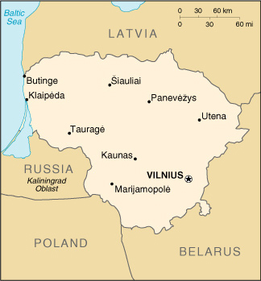

|
Lithuania | |
| Introduction Geography People Government Economy Communications Transportation Military Transnational Issues | ||
|  | ||
| Lithuania | Introduction | Top of Page |
| Background: | Independent between the two World Wars, Lithuania was annexed by the USSR in 1940. On 11 March 1990, Lithuania became the first of the Soviet republics to declare its independence, but this proclamation was not generally recognized until September of 1991 (following the abortive coup in Moscow). The last Russian troops withdrew in 1993. Lithuania subsequently has restructured its economy for eventual integration into Western European institutions. |
| Lithuania | Geography | Top of Page |
| Location: | Eastern Europe, bordering the Baltic Sea, between Latvia and Russia |
| Geographic coordinates: | 56 00 N, 24 00 E |
| Map references: | Europe |
| Area: |
total:
65,200 sq km
land: 65,200 sq km water: 0 sq km |
| Area - comparative: | slightly larger than West Virginia |
| Land boundaries: |
total:
1,273 km
border countries: Belarus 502 km, Latvia 453 km, Poland 91 km, Russia (Kaliningrad) 227 km |
| Coastline: | 99 km |
| Maritime claims: | territorial sea: 12 NM |
| Climate: | transitional, between maritime and continental; wet, moderate winters and summers |
| Terrain: | lowland, many scattered small lakes, fertile soil |
| Elevation extremes: |
lowest point:
Baltic Sea 0 m
highest point: Juozapines/Kalnas 292 m |
| Natural resources: | peat, arable land |
| Land use: |
arable land:
39%
permanent crops: 9% permanent pastures: 6% forests and woodland: 31% other: 15% (2001 est.) |
| Irrigated land: | 430 sq km (1993 est.) |
| Natural hazards: | NA |
| Environment - current issues: | contamination of soil and groundwater with petroleum products and chemicals at military bases |
| Environment - international agreements: |
party to:
Biodiversity, Climate Change, Hazardous Wastes, Ozone Layer Protection, Ship Pollution, Wetlands
signed, but not ratified: Air Pollution-Persistent Organic Pollutants, Climate Change-Kyoto Protocol |
| Lithuania | People | Top of Page |
| Population: | 3,610,535 (July 2001 est.) |
| Age structure: |
0-14 years:
18.75% (male 345,694; female 331,125)
15-64 years: 67.69% (male 1,181,119; female 1,262,872) 65 years and over: 13.56% (male 165,732; female 323,993) (2001 est.) |
| Population growth rate: | -0.27% (2001 est.) |
| Birth rate: | 10 births/1,000 population (2001 est.) |
| Death rate: | 12.86 deaths/1,000 population (2001 est.) |
| Net migration rate: | 0.15 migrant(s)/1,000 population (2001 est.) |
| Sex ratio: |
at birth:
1.05 male(s)/female
under 15 years: 1.04 male(s)/female 15-64 years: 0.94 male(s)/female 65 years and over: 0.51 male(s)/female total population: 0.88 male(s)/female (2001 est.) |
| Infant mortality rate: | 14.5 deaths/1,000 live births (2001 est.) |
| Life expectancy at birth: |
total population:
69.25 years
male: 63.3 years female: 75.5 years (2001 est.) |
| Total fertility rate: | 1.37 children born/woman (2001 est.) |
| HIV/AIDS - adult prevalence rate: | 0.02% (1999 est.) |
| HIV/AIDS - people living with HIV/AIDS: | less than 500 (1999 est.) |
| HIV/AIDS - deaths: | less than 100 (1999 est.) |
| Nationality: |
noun:
Lithuanian(s)
adjective: Lithuanian |
| Ethnic groups: | Lithuanian 80.6%, Russian 8.7%, Polish 7%, Byelorussian 1.6%, other 2.1% |
| Religions: | Roman Catholic (primarily), Lutheran, Russian Orthodox, Protestant, Evangelical Christian Baptist, Muslim, Jewish |
| Languages: | Lithuanian (official), Polish, Russian |
| Literacy: |
definition:
age 15 and over can read and write
total population: 98% male: 99% female: 98% (1989 est.) |
| Lithuania | Government | Top of Page |
| Country name: |
conventional long form:
Republic of Lithuania
conventional short form: Lithuania local long form: Lietuvos Respublika local short form: Lietuva former: Lithuanian Soviet Socialist Republic |
| Government type: | parliamentary democracy |
| Capital: | Vilnius |
| Administrative divisions: | 44 regions (rajonai, singular - rajonas) and 11 municipalities*: Akmenes Rajonas, Alytaus Rajonas, Alytus*, Anyksciu Rajonas, Birstonas*, Birzu Rajonas, Druskininkai*, Ignalinos Rajonas, Jonavos Rajonas, Joniskio Rajonas, Jurbarko Rajonas, Kaisiadoriu Rajonas, Kaunas*, Kauno Rajonas, Kedainiu Rajonas, Kelmes Rajonas, Klaipeda*, Klaipedos Rajonas, Kretingos Rajonas, Kupiskio Rajonas, Lazdiju Rajonas, Marijampole*, Marijampoles Rajonas, Mazeikiu Rajonas, Moletu Rajonas, Neringa* Pakruojo Rajonas, Palanga*, Panevezio Rajonas, Panevezys*, Pasvalio Rajonas, Plunges Rajonas, Prienu Rajonas, Radviliskio Rajonas, Raseiniu Rajonas, Rokiskio Rajonas, Sakiu Rajonas, Salcininku Rajonas, Siauliai*, Siauliu Rajonas, Silales Rajonas, Silutes Rajonas, Sirvintu Rajonas, Skuodo Rajonas, Svencioniu Rajonas, Taurages Rajonas, Telsiu Rajonas, Traku Rajonas, Ukmerges Rajonas, Utenos Rajonas, Varenos Rajonas, Vilkaviskio Rajonas, Vilniaus Rajonas, Vilnius*, Zarasu Rajonas |
| Independence: | 11 March 1990 (independence declared from Soviet Union); 6 September 1991 (Soviet Union recognizes Lithuania's independence) |
| National holiday: | Independence Day, 16 February (1918); note - 16 February 1918 is the date of independence from German, Austrian, Prussian, and Russian occupation, 11 March 1990 is the date of independence from the Soviet Union |
| Constitution: | adopted 25 October 1992 |
| Legal system: | based on civil law system; no judicial review of legislative acts |
| Suffrage: | 18 years of age; universal |
| Executive branch: |
chief of state:
President Valdas ADAMKUS (since 26 February 1998)
head of government: Premier Algirdas BRAZAUSKAS (since 3 July 2001) cabinet: Council of Ministers appointed by the president on the nomination of the premier elections: president elected by popular vote for a five-year term; election last held 21 December 1997 and 4 January 1998 (next to be held NA 2002); premier appointed by the president on the approval of the Parliament election results: Valdas ADAMKUS elected president; percent of vote - Valdas ADAMKUS 50.4%, Arturas PAULAUSKAS 49.6% |
| Legislative branch: |
unicameral Parliament or Seimas (141 seats, 71 members are directly elected by popular vote, 70 are elected by proportional representation; members serve four-year terms)
elections: last held 8 October 2000 (next to be held NA October 2004) election results: percent of vote by party - Social Democratic Coalition 31.1%, New Union/Social Liberals 19.6%, Liberal Union 17.2%, TS 8.6%, remaining parties all less than 5%; seats by party - Social Democratic Coalition 52, Liberal Union 34, New Union/Social Liberals 29, TS 9, Farmer's Party 4, Center Union 2, Poles' Electoral Action 2, Modern Christian Democratic Union 1, independents 3, others 5 |
| Judicial branch: | Supreme Court; Court of Appeal; judges for both courts appointed by the Parliament |
| Political parties and leaders: | Christian Democratic Party or LKDP [Zigmas ZINKEVICIUS, chairman]; Electoral Action of Lithuanian Poles [Valdemar TOMASZEVSKI, chairman]; Homeland Union/Conservative Party or TS [Vytautas LANDSBERGIS, chairman]; Lithuanian Center Union or LCS [Kestutis GLAVECKAS, chairman]; Lithuanian Farmer's Party or LUP [Ramunas KARBAUSKIS, chairman]; Lithuanian Liberal Union [Rolandas PAKSAS, chairman]; Lithuanian Social Democratic Coalition [Algirdas BRAZAUSKAS, chairman] consists of the Lithuanian Democratic Labor Party or LDDP, the Lithuanian Social Democratic Party or LSPD, and New Democracy; Modern Christian Democratic Union [Vytautas BOGUSIS, chairman]; New Union-Social Liberals [Arturas PAULAUSKAS, chairman] |
| Political pressure groups and leaders: | NA |
| International organization participation: | ACCT (observer), BIS, CBSS, CCC, CE, EAPC, EBRD, ECE, EU (applicant), FAO, IAEA, IBRD, ICAO, ICC, ICFTU, ICRM, IFC, IFRCS, ILO, IMF, IMO, Intelsat (nonsignatory user), Interpol, IOC, IOM, ISO (correspondent), ITU, OPCW, OSCE, PFP, UN, UNCTAD, UNESCO, UNMIK, UPU, WCL, WEU (associate partner), WHO, WIPO, WMO, WTrO (observer) |
| Diplomatic representation in the US: |
chief of mission:
Ambassador Vygaudas USACKAS
chancery: 2622 16th Street NW, Washington, DC 20009 telephone: [1] (202) 234-5860 FAX: [1] (202) 328-0466 consulate(s) general: Chicago and New York |
| Diplomatic representation from the US: |
chief of mission:
Ambassador John F. TEFFT
embassy: Akmenu 6, 2600 Vilnius mailing address: American Embassy, Vilnius, PSC 78, Box V, APO AE 09723 telephone: [370] (2) 223-031 FAX: [370] (2) 227-236 |
| Flag description: | three equal horizontal bands of yellow (top), green, and red |
| Lithuania | Economy | Top of Page |
| Economy - overview: | Lithuania, the Baltic state that has conducted the most trade with Russia, has been slowly rebounding from the 1998 Russian financial crisis. High unemployment and weak consumption have held back recovery. GDP growth for 2000 - estimated at 2.9% - fell behind that of Estonia and Latvia, and unemployment is estimated at 10.8%, the country's highest since regaining independence in 1990. For 2001, Lithuanians forecast 3.2% growth, 1.8% inflation, and a fiscal deficit of 3.3%. In early 2001, the Lithuanian Government announced that it will repeg its currency, the litas, to the euro (the litas is currently pegged to the dollar) some time in 2002. Lithuania must ratify 25 agreements along with other legal documents and obligations by 1 May 2001 before gaining World Trade Organization membership. Lithuania was invited to the Helsinki summit in December 1999 and began EU accession talks in early 2000. Privatization of the large, state-owned utilities, particularly in the energy sector, remains a key challenge for 2001. |
| GDP: | purchasing power parity - $26.4 billion (2000 est.) |
| GDP - real growth rate: | 2.9% (2000 est.) |
| GDP - per capita: | purchasing power parity - $7,300 (2000 est.) |
| GDP - composition by sector: |
agriculture:
10%
industry: 33% services: 57% (1999 est.) |
| Population below poverty line: | NA% |
| Household income or consumption by percentage share: |
lowest 10%:
3.1%
highest 10%: 25.6% (1996) |
| Inflation rate (consumer prices): | 1% (2000 est.) |
| Labor force: | 2 million (2000 est.) |
| Labor force - by occupation: | industry 30%, agriculture 20%, services 50% (1997 est.) |
| Unemployment rate: | 10.8% (2000) |
| Budget: |
revenues:
$1.5 billion
expenditures: $1.7 billion, including capital expenditures of $NA (1997 est.) |
| Industries: | metal-cutting machine tools, electric motors, television sets, refrigerators and freezers, petroleum refining, shipbuilding (small ships), furniture making, textiles, food processing, fertilizers, agricultural machinery, optical equipment, electronic components, computers, amber |
| Industrial production growth rate: | 2.3% (2000 est.) |
| Electricity - production: | 13.567 billion kWh (1999) |
| Electricity - production by source: |
fossil fuel:
23.89%
hydro: 3.43% nuclear: 72.68% other: 0% (1999) |
| Electricity - consumption: | 9.817 billion kWh (1999) |
| Electricity - exports: | 3.2 billion kWh (1999) |
| Electricity - imports: | 400 million kWh (1999) |
| Agriculture - products: | grain, potatoes, sugar beets, flax, vegetables; beef, milk, eggs; fish |
| Exports: | $3.7 billion (f.o.b., 2000) |
| Exports - commodities: | machinery and equipment 22%, mineral products 15%, chemicals 12%, textiles and clothing, foodstuffs (1999) |
| Exports - partners: | Germany 15.8%, Latvia 12.6%, Russia 6.9%, Belarus 5.8%, Denmark (1999) |
| Imports: | $4.9 billion (f.o.b., 2000) |
| Imports - commodities: | machinery and equipment 18%, mineral products 16%, chemicals 10%, textiles and clothing 10%, transport equipment 7% (1999) |
| Imports - partners: | Russia 20.4%, Germany 16.5%, Denmark 3.8%, Belarus 2.2%, Latvia 2% (1999) |
| Debt - external: | $2.5 billion (2000 est.) |
| Economic aid - recipient: | $228.5 million (1995) |
| Currency: | litas (LTL) |
| Currency code: | LTL |
| Exchange rates: | litai per US dollar - 4.000 (fixed rate since 1 May 1994); note - litai is the plural of litas |
| Fiscal year: | calendar year |
| Lithuania | Communications | Top of Page |
| Telephones - main lines in use: | 1.048 million (1997) |
| Telephones - mobile cellular: | 297,500 (November 1998) |
| Telephone system: |
general assessment:
inadequate, but is being modernized to provide an improved international capability and better residential access
domestic: a national, fiber-optic cable, interurban, trunk system is nearing completion; rural exchanges are being improved and expanded; mobile cellular systems are being installed; access to the Internet is available; still many unsatisfied telephone subscriber applications international: landline connections to Latvia and Poland; major international connections to Denmark, Sweden, and Norway by submarine cable for further transmission by satellite |
| Radio broadcast stations: | AM 3, FM 112, shortwave 1 (1998) |
| Radios: | 1.9 million (1997) |
| Television broadcast stations: | 20 (plus 30 repeaters) (1995) |
| Televisions: | 1.7 million (1997) |
| Internet country code: | .lt |
| Internet Service Providers (ISPs): | 14 (2000) |
| Internet users: | 225,000 (2000) |
| Lithuania | Transportation | Top of Page |
| Railways: |
total:
2,002 km
broad gauge: 2,002 km 1.524-m gauge (122 km electrified) (1994) |
| Highways: |
total:
44,000 km
paved: 35,500 km unpaved: 8,500 km (2000) |
| Waterways: | 600 km (perennially navigable) |
| Pipelines: | crude oil, 105 km; natural gas 760 km (1992) |
| Ports and harbors: | Butinge, Kaunas, Klaipeda |
| Merchant marine: |
total:
50 ships (1,000 GRT or over) totaling 293,168 GRT/327,827 DWT
ships by type: cargo 26, combination bulk 10, petroleum tanker 2, railcar carrier 1, refrigerated cargo 7, roll on/roll off 1, short-sea passenger 3 (2000 est.) |
| Airports: | 72 (2000 est.) |
| Airports - with paved runways: |
total:
9
over 3,047 m: 2 1,524 to 2,437 m: 4 under 914 m: 3 (2000 est.) |
| Airports - with unpaved runways: |
total:
63
1,524 to 2,437 m: 3 914 to 1,523 m: 5 under 914 m: 55 (2000 est.) |
| Lithuania | Military | Top of Page |
| Military branches: | Ground Forces, Navy, Air and Air Defense Force, Security Forces (internal and border troops), National Guard (Skat) |
| Military manpower - military age: | 18 years of age |
| Military manpower - availability: | males age 15-49: 929,389 (2001 est.) |
| Military manpower - fit for military service: | males age 15-49: 730,363 (2001 est.) |
| Military manpower - reaching military age annually: | males: 28,506 (2001 est.) |
| Military expenditures - dollar figure: | $181 million (FY99) |
| Military expenditures - percent of GDP: | 1.66% (FY00) |
| Lithuania | Transnational Issues | Top of Page |
| Disputes - international: | Latvia has not ratified a 1998 maritime boundary agreement with Lithuania (primary concern is oil exploration rights); 1997 border agreement with Russia not yet ratified by Russia |
| Illicit drugs: | transshipment point for opiates and other illicit drugs from Southwest Asia, Latin America, and Western Europe to Western Europe and Scandinavia; limited production of methamphetamine and ecstasy |
{kind=link}
{kind=link}